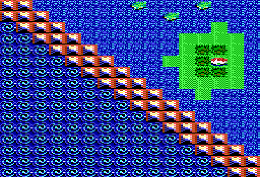

Area A4
| X | Y | Event |
| 13 | 13 | A pool of blood like liquid oozes out of a crevice Drink (y/n)? |
| 12 | 15 | Prisoners staked to the ground free them (y/n)? |
| 13 | 10 | Atlantium |
| 10 | 14 | Prisoners staked to the ground free them (y/n)? |
| 8 | 15 | Prisoners staked to the ground free them (y/n)? |
| 8 | 8 | Water transmutation |
| 1 | 1 | Water encasement |
| 0 | 0 | Elemental Plane of water |
| 12 | 7 | A magical foutain burbles at your feet. Do you drink the water (y/n)? |
| 10 | 10 | A rancid smell rises from a fetid pool. Dare to sip the sewage(y/n)? |